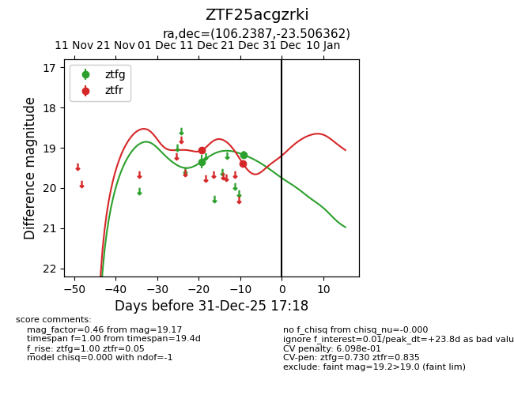
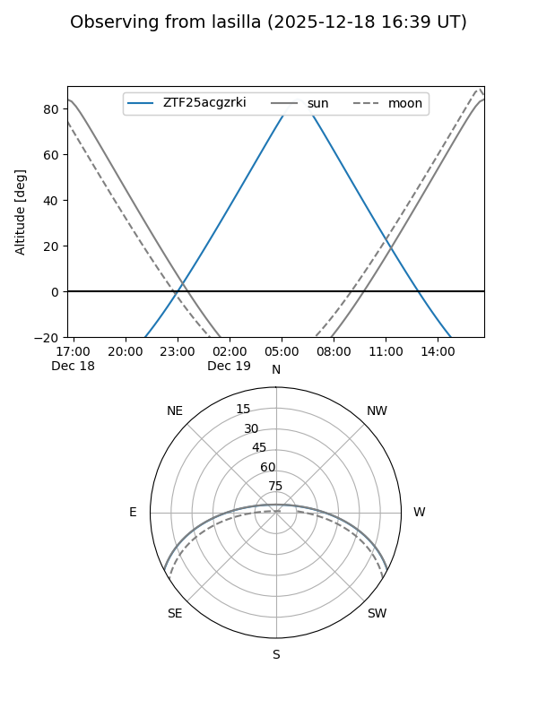
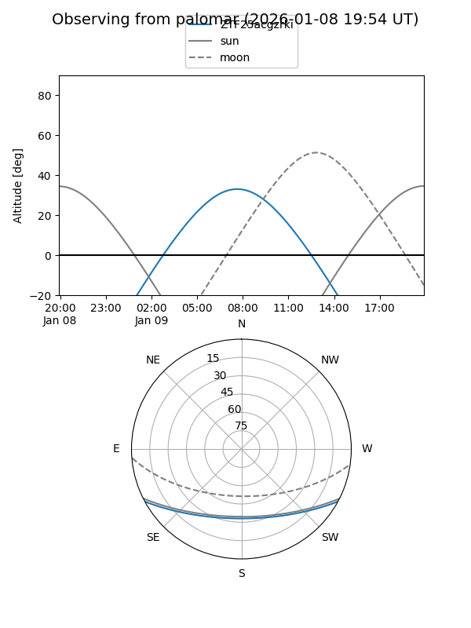
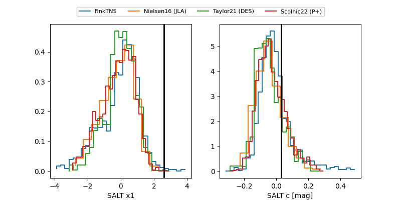

ZTF25acgzrki
Target ZTF25acgzrki at 2025-12-31 18:00
Aliases and brokers:
FINK: link
Lasair: link
ALeRCE: link
alt names
ZTF25acgzrki (ztf,fink_ztf)
Coordinates:
equatorial (ra, dec) = 106.2387,-23.50636
equatorial (HMS+DMS) = 07:04:57.29,-23:30:22.90
galactic (l, b) = (235.4554,-7.68710)
Flags:
likely cv
Photometry:
last ztfg=19.17, ztfr=19.40
2 ztfg, 2 ztfr detections
Lightcurve

Visibility


Additional plots
